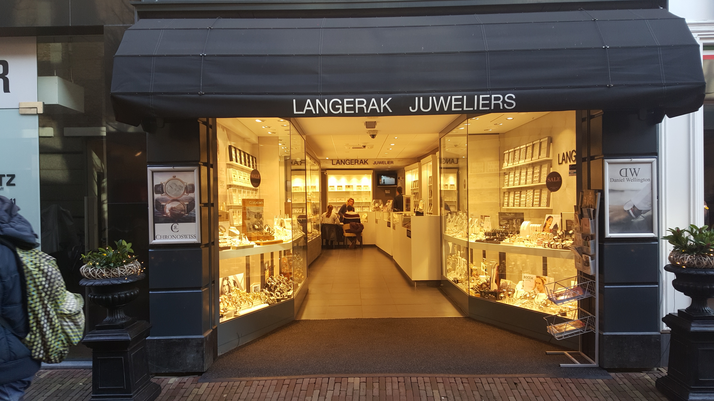
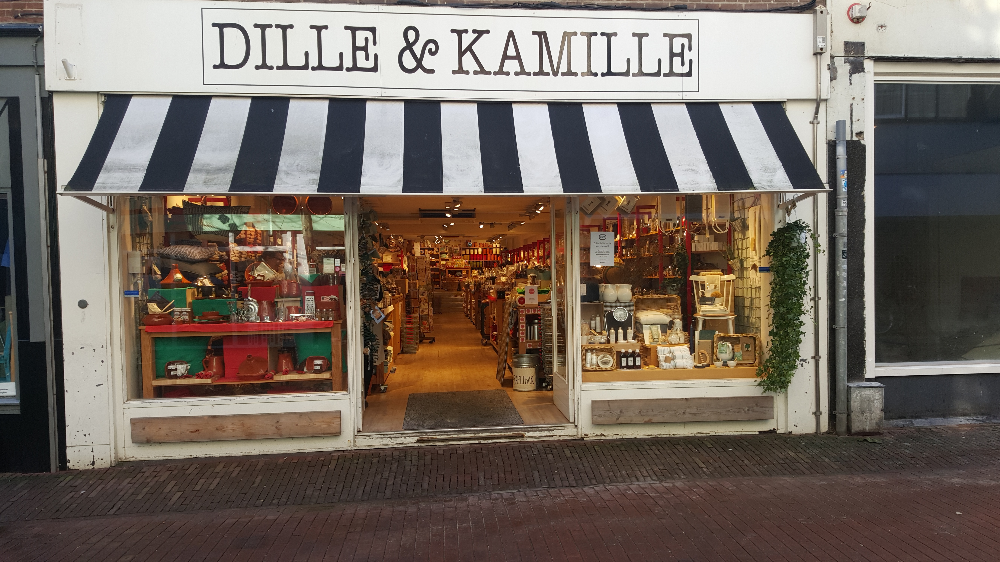
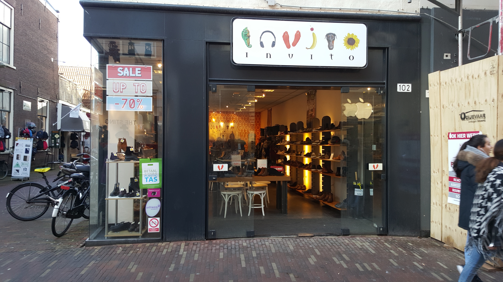

Speciaalzaken

Juwelier Langerak is sinds 1966 een begrip in de wijde omgeving van Haarlem en staat bekend om de ruime collectie aan sieraden, maar vooral ook om de enorme vriendelijkheid, gastvrijheid en service.
Door de vele merken en het veelzijdige assortiment, hebben we sieraden voor jong en oud.
Naast de vele merkartikelen is er ook nog een grote huiscollectie in goud en zilver.
Door deze grote voorraad zal er zelden niet aan uw behoefte worden voldaan.

Bij Saar Thuis is een winkel met Family Lifestyle.
Bij Saar Thuis verkoopt prachtige kleding & accessoires voor zowel het huis, de vrouw, de man en natuurlijk de kinderen.
Bij Bij Saar Thuis ben je aan het juiste adres voor mooie en kleurige tassen, sjaals, unieke omslagdoeken, laarzen en hele mooie accessoires en sieraden.

De wereld van Jansje is een verrassende cadeauwinkel, lunchroom en webshop met een prachtige collectie duurzame producten uit de hele wereld waarbij Fair Design centraal staat.
Van hippe olieblikken tot vintage sieraden, recycle, upcycle, hip en uniek.
Alles wordt vanuit maatschappelijke betrokkenheid ontworpen en geproduceerd.
Bij Jansje werken betrokken en goed opgeleide mensen met een beperking.
In de winkel en onze lunchroom bent u altijd welkom.

De meeste artikelen van Dille & Kamille Haarlem zijn gemaakt van natuurlijke materialen als hout, aardewerk en katoen.
Stap de winkel binnen en weet je omgeven door robuuste eenvoud. Hier vind je alle spullen voor in huis, keuken en tuin.
Dwaal rond tussen de houten pollepels, peper en zout stellen, theesoorten, bloempotten, snijplankjes en nog veel meer hebbedingetjes.
Klassieke muziek en de heerlijkste geuren, afkomstig van tientallen zeepjes en kaarsen, doen de rest.

Invito vertaalt internationale trends naar fashionable items op een Nederlands prijsniveau.
Naast een inspirerende damescollectie is er ook voor mannen met gevoel voor stijl een collectie met verschillende topmerken sneakers, boots, loavers en stylish shoes.
Invito is 24/7 spot on fashion! Het gehele winkelaanbod is ook te vinden in de webshop van Invito en uiteraard op intreza.nl.